Bienvenue chez Dans ma bulle
Réflexologie et bien-être à Mauges-sur-Loire
Réflexologie et bien-être à Mauges-sur-Loire
La réflexologie, le chemin vers la légèreté
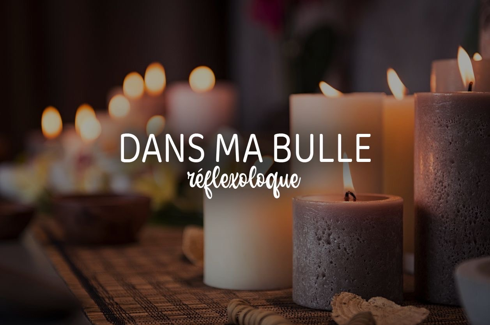
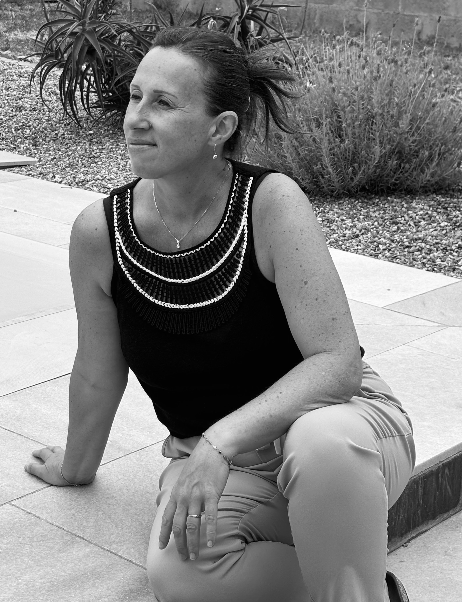
Je suis Stéphanie, réflexologue en énergétique chinoise, pratiquant la réflexologie plantaire et palmaire. Le prendre soin à toujours fait partit de ma vie, ceci dés mon enfance. Le fait d’avoir, une sœur en situation de handicap a ouvert mon esprit a l’envie d’aider les autres, de les comprendre pour mieux les accompagner. C’est pourquoi, je me suis dirigée vers les métiers de l’accompagnement. D’abord en m’orientant vers la psychologie et par la suite en passant mon diplôme de monitrice éducatrice. 15 ans d’expérience en foyer pour personnes en situation de handicap, m'ont permis de développer mon savoir être et mon savoir faire auprès des personnes fragiles. D’avoir une oreille attentive et une observation fine de la personne dans sa globalité. Un changement de vie personnelle, l’expérience de la maladie et la perte d’un être cher va me faire quitter le secteur du social, c’est à ce tournant de ma vie que je vais connaître ce qu’est la résilience. La résilience m’a permis d’être plus forte malgré les épreuves, de prendre le positif de chaque situation. Cela va me donner une vision différente de la vie. Des rencontres humaines vont m’ouvrir à des disciplines, comme le yoga, le shiatsu ce qui va me permettre de m’ancrer plus fortement dans la vie. Un voyage en inde va aussi m’ouvrir à la spiritualité, sans parler de religion, mais cela va m’aider dans mon travail du deuil.
La réflexologie est une approche globale du corps, celle-ci permet une harmonisation, un équilibre de chacun de nos systèmes, afin de soulager, de relâcher, d’apaiser mais aussi de dynamiser votre organisme. La technique de massage qui s’appelle la reptation, qui se fait avec les pouces, va permettre d’aller stimuler de façon plus ou moins intense des zones réflexes qui sont en lien avec nos organes. Lors de mes séances, je serais dans une écoute bienveillante de vos besoins, qu’ils soient physiques ou psychiques. Un temps d’échange de début de séance me permettra de cibler vos attentes ainsi visualiser les zones importantes à explorer et établir un protocole. S’offrir une séance de réflexologie, cela peut-être juste un moment de bien être, se permettre de faire pause, de prendre soin de soi, dans nos vies rythmés par notre emploi du temps bien chargé. Cela peut aussi permettre de soigner des maux physiques ou psychologique à plus ou moins long terme. Mais cette technique ne remplace à aucun moment un suivi médical..
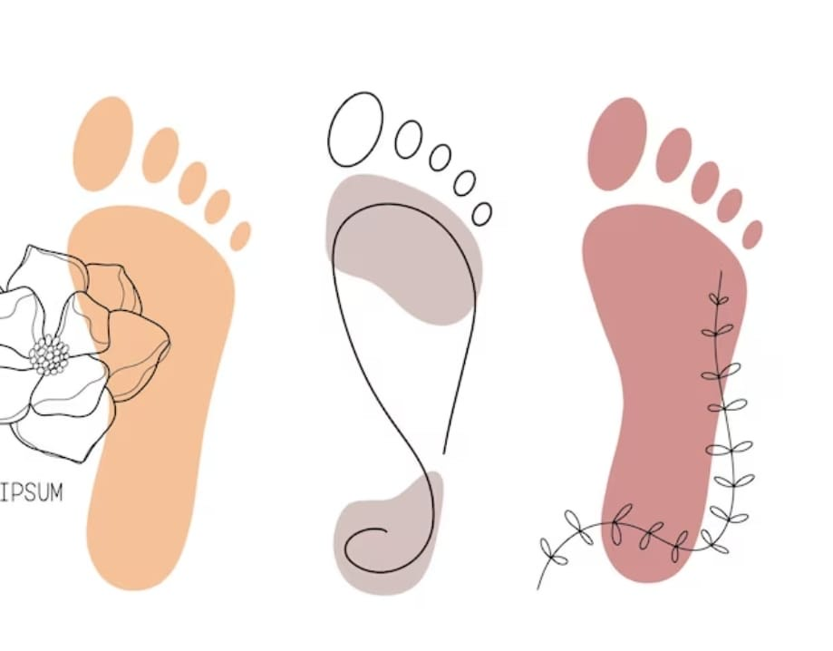
Je propose mes séances de réflexologie à toutes personnes : enfants, ados, adultes, personnes âgées ou fragiles, souhaitant découvrir, prendre du temps pour soi ou commencer un suivi. Faire une séance de réflexologie peut apporter de nombreux bienfaits, tant physiques qu’émotionnels. Voici les principales raisons pour lesquelles vous pouvez choisir cette pratique :
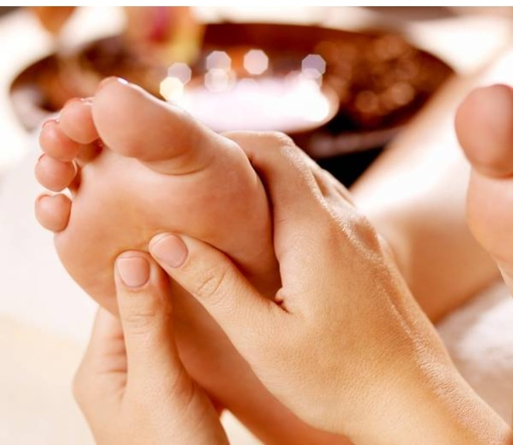
Détente et réduction du stress
La réflexologie induit une profonde relaxation. En stimulant des points réflexes (souvent sur les pieds, les mains ou le visage), elle aide à apaiser le système nerveux et à réduire les tensions accumulées.
Soulagement des douleurs
Elle peut contribuer à soulager les maux de dos, les migraines, les douleurs menstruelles, les tensions musculaires, certaines douleurs chroniques (fibromyalgie, arthrose).
Amélioration du sommeil
La détente profonde qu’elle procure favorise l’endormissement et un sommeil plus réparateur.
Stimulation de la circulation sanguine et lymphatique
En activant certains points, la réflexologie peut améliorer la circulation, ce qui aide à oxygéner les tissus et à éliminer les toxines.
Équilibrage des fonctions du corps
Elle agit selon le principe que chaque zone du pied (ou de la main) correspond à un organe ou une fonction du corps. Cela permet de rééquilibrer l’énergie vitale.
Soutien en période de changement ou de convalescence
La réflexologie peut accompagner des périodes de transition : fatigue, burn-out, grossesse, sevrage tabagique, traitement médical lourd (en soutien, jamais en remplacement), deuil.
La réflexologie ne se limite pas au soulagement des douleurs physiques : elle joue également un rôle important dans la gestion des émotions. En stimulant certains points réflexes, il est possible d’agir sur l’équilibre émotionnel de la personne.
Le lien corps-esprit en réflexologie
Les émotions ont un impact direct sur le corps. Le stress, l’anxiété ou les chocs émotionnels peuvent entraîner des tensions musculaires, des troubles digestifs ou du sommeil. À l’inverse, un déséquilibre physique peut aussi affecter le bien-être mental. La réflexologie aide à rétablir cette harmonie en agissant à la fois sur le plan physique et émotionnel.
Lors de la première séance de 1h30
Un temps d'échange d'environ 15 à 30 minutes est nécessaire pour mieux comprendre vos attentes et mieux se connaître, suivi d'un temps d'installation, puis du massage drainant de vos jambes (jusqu'au genou) ou des bras. (C'est pourquoi je vous demande une tenue souple.)
Nous poursuivons ensuite avec le massage en réflexologie, sur les différentes zones de vos pieds ou de vos mains.
Lors d'une séance, certaines zones peuvent se révéler particulièrement sensibles. Ces réactions ne sont pas anodines : elles témoignent souvent d’un blocage émotionnel. En exerçant une pression douce mais ciblée, je peux favoriser une libération émotionnelle, permettant au corps de "lâcher prise" et à l'esprit de retrouver un état plus serein.
Lors des séances de suivi de 1h, un temps d’échange est toujours nécessaire, mais plus court, afin que vous me fassiez un retour suite à la séance précédente. Ensuite, je pratique le massage en fonction de vos attentes du jour.
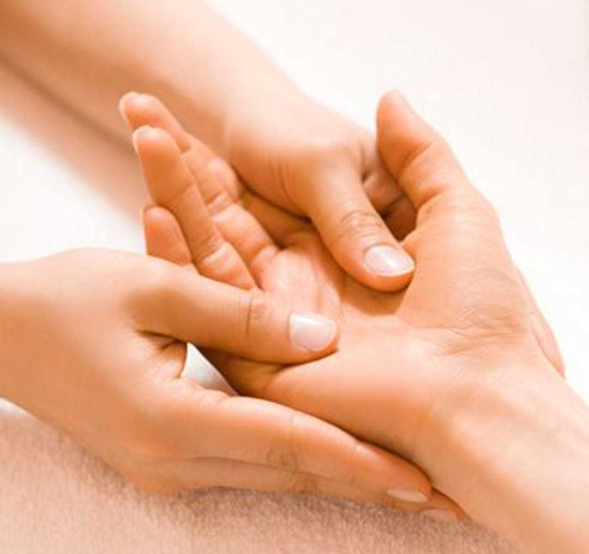
Contre-indications à la réflexologie
La réflexologie est une méthode naturelle douce, mais certaines situations nécessitent précaution ou avis médical préalable. Voici les principales contre-indications :
En cas de doute, n’hésitez pas à me contacter pour en discuter ou à demander l’avis de votre médecin traitant. La réflexologie ne remplace jamais un traitement médical, mais peut être un excellent accompagnement complémentaire, dans le respect de votre état de santé.
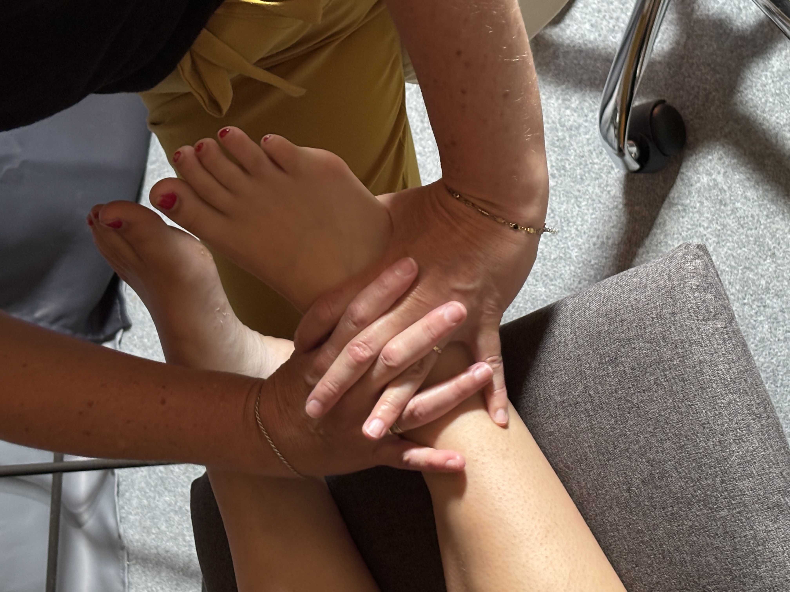
1ʳᵉ séance 1h30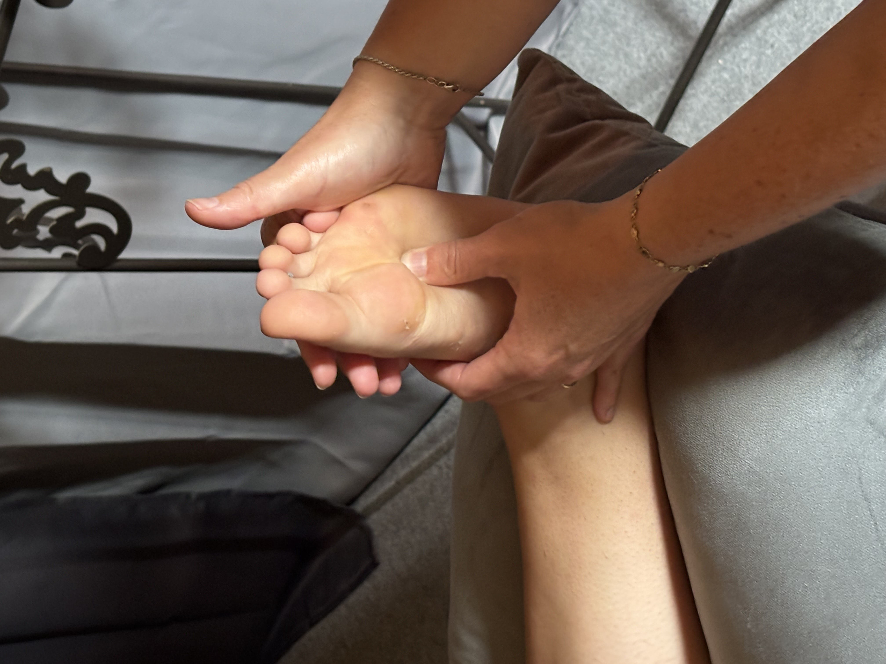
Plantaire 1h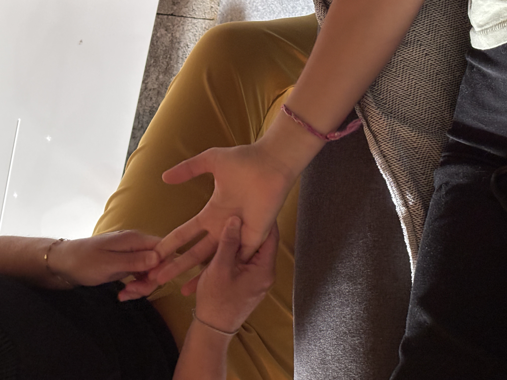
Palmaire 1h"Stéphanie est très à l 'écoute des maux qui nous amènent vers de la médecine douce pour les soulager , ou mieux encore les voir disparaître. Elle prend le temps de l'analyse, pour ensuite apporter conseils et bien-être au fil des séances. Lors des séances, Stéphanie est très investie, et sa pratique douce permet de lâcher prise, un temps pour soi. Alors pas d' hésitation, prenez rendez-vous dès que possible, vous serez entre de bonnes mains et relaxé." Anne Guilloteau
"Moment très agréable et qui m’a fait énormément de bien. Stephanie est à l’écoute tout en étant dans l’explication des soins apportés ! Merci encore pour ce doux moment." Elaine Morel
La réflexologie n'est pas censée faire mal, mais il arrive que certaines zones soient sensibles, surtout si elles correspondent à un déséquilibre ou une tension dans le corps. Cette sensibilité est généralement passagère et indique simplement une zone à rééquilibrer. Mon toucher reste adapté, respectueux et doux, en fonction de votre sensibilité. Le but n’est jamais de forcer, mais d’accompagner le corps vers un mieux-être, en douceur.
Immédiatement après la séance : Certains ressentent des effets dès la fin de la séance. Il peut s'agir d'une sensation de légèreté, de détente profonde, voire de somnolence. D'autres peuvent ressentir un regain d’énergie ou une meilleure circulation sanguine. Dans les heures ou les jours qui suivent : Après une séance, il est fréquent d'observer des réactions temporaires telles qu'une augmentation de la fréquence urinaire (signe d’élimination des toxines), des émotions plus intenses ou encore un sommeil plus réparateur. Après plusieurs séances : Pour des troubles chroniques ou un déséquilibre plus profond, les bienfaits s’installent progressivement. En général, il faut entre 3 et 5 séances pour observer des changements notables. Facteurs influençant la rapidité : 🔹 État de santé général 🔹 Fréquence des séances 🔹 Hygiène de vie En résumé, certaines personnes ressentent les bienfaits immédiatement, tandis que d'autres ont besoin de plusieurs séances pour observer des changements profonds.
Chaque personne réagit différemment à une séance de réflexologie, mais voici les effets les plus fréquents : 🔹 Une profonde détente : la sensation de calme et de lâcher-prise est souvent immédiate. 🔹 Une fatigue passagère : le corps se relâche, ce qui peut entraîner une envie de repos ou de sommeil. 🔹 Une amélioration du sommeil : certaines personnes dorment mieux dès la première nuit. 🔹 Des réactions physiques : parfois, une augmentation temporaire de l’élimination (urines, transit), des frissons ou une légère sensation de froid peuvent apparaître. 🔹 Une libération émotionnelle : il est possible de ressentir une émotion (joie, tristesse, apaisement), signe que le corps relâche certaines tensions. Ces effets sont naturels et temporaires : ils montrent que le corps réagit et commence à s’autoréguler. Si besoin, nous pourrons en parler ensemble lors de la séance suivante.
Voici quelques souvenirs de nos moments partagés :
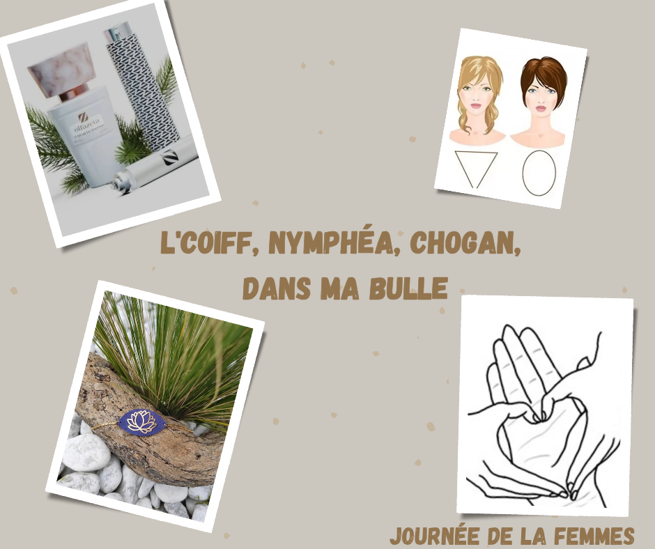
✨Pour la journée de la femme le 8 mars✨ Dans ma bulle à été présente au salon de coiffure L'coiff de la Pommeraye pour un temps découverte réflexologie palmaire. Un temps de massage des mains durant le temps de pause couleur ou en fin de coupe, a été proposé au clients. Ceci pour apporter détente et permettre de découvrir cette belle pratique. 👐 Ce petit moment de détente rien que pour vous 👐 Moment qui fut apprécié, avec un retour positif. Stéphanie, réflexologue, Dans ma bulle
Journée Bien-être
📍 Camping d'Ancenis, Imp. de l'Île Mouchet, 44150 Ancenis
📅 Date : 5 septembre 2025
🕒 11h - 20h
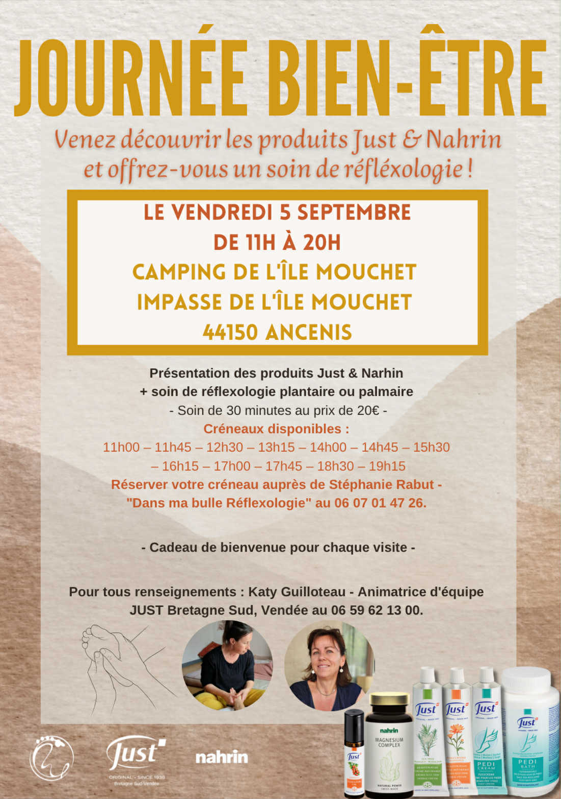
Offrez-vous une parenthèse de bien-être Le jeudi 5 septembre, de 11h à 20h, venez vivre un moment de détente et de douceur au Camping d’Ancenis. Au programme : – Produits naturels JUST, pour prendre soin de vous au quotidien – Séances découverte de réflexologie plantaire ou palmaire pour vous ressourcer en toute simplicité Profitez de cette occasion pour tester la réflexologie, ressentir ses bienfaits… et peut-être envisager ensuite une séance complète à mon domicile, selon vos besoins. Réservez dès maintenant votre moment de bien-être auprès de Stéphanie au 06 07 01 47 26. Un temps pour vous, pour souffler, pour vous recentrer.

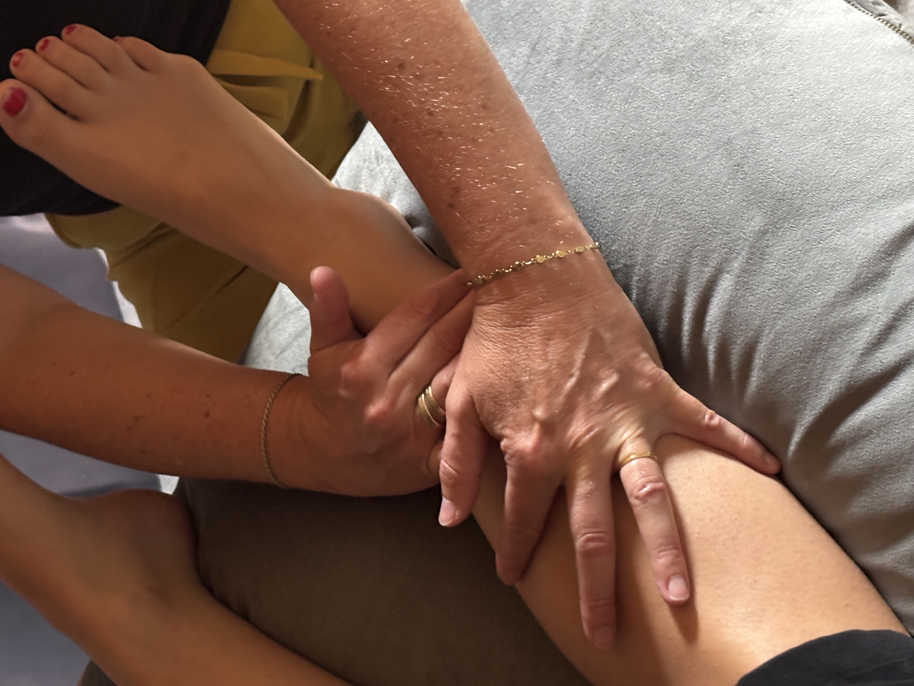
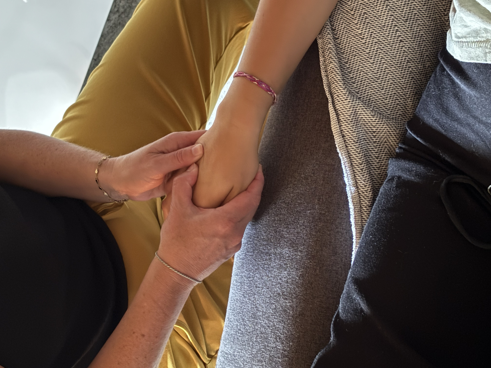
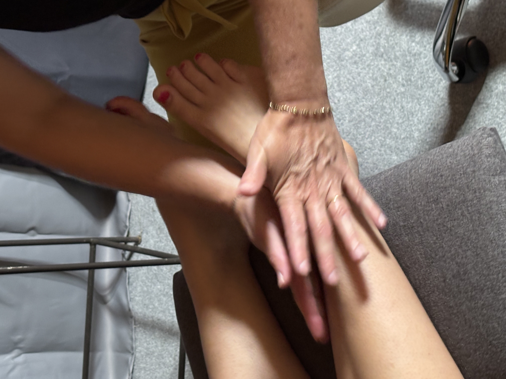
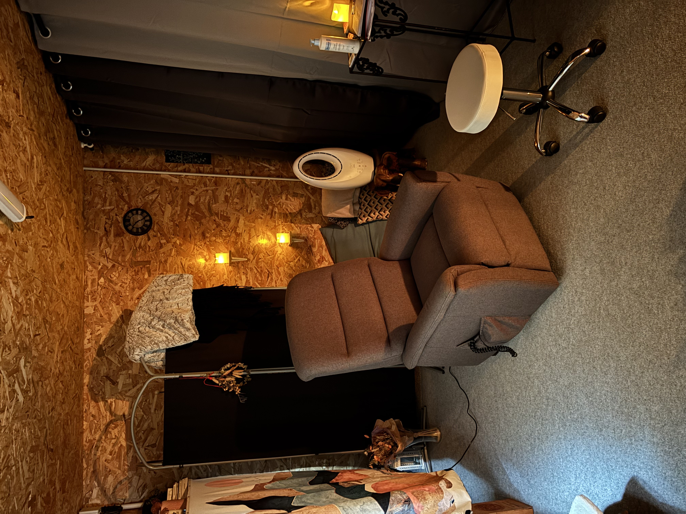

Téléphone : 06 07 01 47 26
Email : dansmabulle.reflexologue@gmail.com